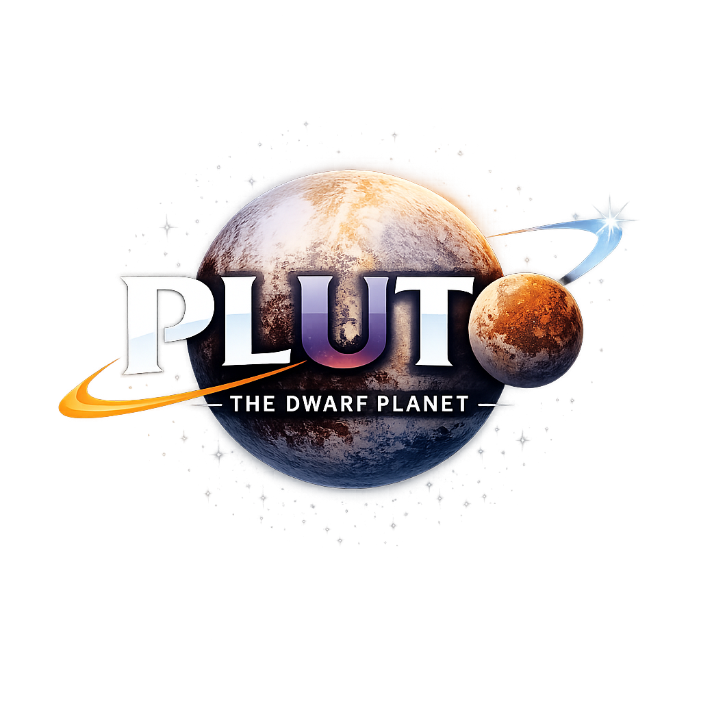

Earth
Size: 7,926 Miles
Water %: 71%
Population: 8,279,603,966 Humans
Pluto
Size: 1,477 Miles
Water %: 33%
Population: 0 Humans

Pluto is a small, icy world far out in the solar system beyond Neptune, in a region called the Kuiper Belt. It was discovered in 1930 by astronomer Clyde Tombaugh and was considered the ninth planet for many years. In 2006, Pluto was reclassified as a dwarf planet because it shares its part of space with many other objects. Even though it’s small and very far away, Pluto is still an interesting place with icy mountains, a thin atmosphere, and five known moons, the largest being Charon. In 2015, NASA’s New Horizons spacecraft flew past Pluto and sent back the first close-up images, helping scientists learn much more about this distant world.
Size: 7,926 Miles
Water %: 71%
Population: 8,279,603,966 Humans
Size: 1,477 Miles
Water %: 33%
Population: 0 Humans
Pluto was discovered on February 18, 1930 by Clyde Tombaugh at the Lowell Obserbitory in Arizona.
On June 22, 1978, astronomers discovered Pluto's largest moon, Charon. With this discovery, they were able to accurately determine Pluto's mass.
NASA launched the New Horizons probe to study the Pluto System on January 19, 2006.
On August 24, 2006, the International Astronomical Union reclassified Pluto as a dwarf planet because it hadn't "cleared its neighboring region" of other objects.
On July 14, 2015, The New Horizons probe finally reached Pluto, revealing its "heart", mountains, and thin atmosphere.

Charon is 754 miles wide. The distance between Pluto and Charon is 12,200 miles.

Hydra was discovered in June 2005 and was named after a nine-headed serpent in the Greek and Roman mythology

Nix was discovered in June 2005. Nix was named after the Greek goddess of darkness.

Nix was discovered in June 2005. Nix is roughly 20 to 70 miles wide.